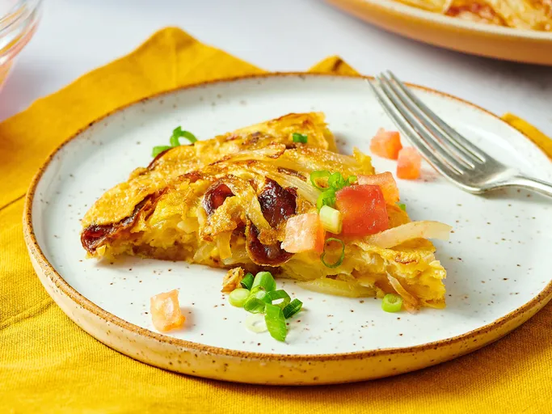

Spanish Omelette
A Spanish omelette, or tortilla, is made with tender fried potatoes and onions cooked with eggs for a hearty meal or delicous tapa dish that everyone will enjoy.

Ingredents
- 1/2 cup olive oil
- 1/2 pound potatoes, thinly sliced
- salt and pepper to taste
- 1 large onion, thinly sliced
- 4 large eggs
- 2 medium tomatoes - peeled, seeded, and coarsely chopped (optional)
- 2 green onions, chopped (optional)
Directions
- Gather all ingredients.
- Heat oil over medium-high heat in a large skillet. Add potatoes and season lightly with salt and pepper; cook; stirring occasionally, until golden brown and crisp, 10 to 14 minutes. Add onions; cook and atir until soft and beginning to brown, 6 to 8 minutes.
- Whisk eggs in a bowl; season with salt and pepper.
- Pour eggs into the skillet and stir gently to combine with the potatoes and onion. Reduce the heat to low and cook until the eggs begin to brown on the bottom, 4 to 5 minutes.
- Loosen omelette with a spatula. Invert a large plate over the pan, and carefully flip omelette out onto the plate. Slide omelette, uncooked-side down, back into the pan. Cook until eggs are set, 4 to 5 minutes.
- Serve warm, garnished with tomato and green onion.